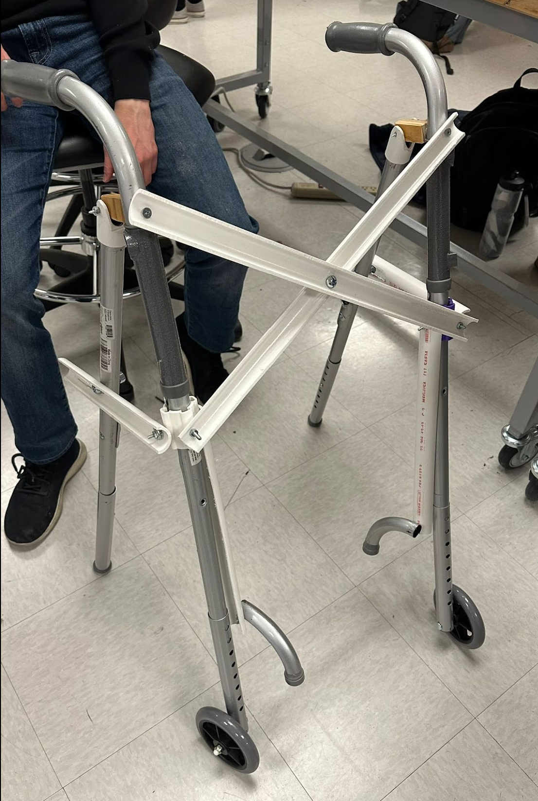

Hardware
Walkane — Walker-Cane Hybrid
Collapsible assistive device bridging cane and walker — 2nd place in competition.
Overview
Engineered a hybrid walker-cane with a collapsible mechanism designed to improve stability during transitions between stairs and flat ground.
Approach
Designed a suitcase pullout mechanism enabling quick reconfiguration and tested prototypes in user scenarios.
Results
Awarded 2nd place in ASBME Makeathon'23; demonstrated compactness and stability improvements.